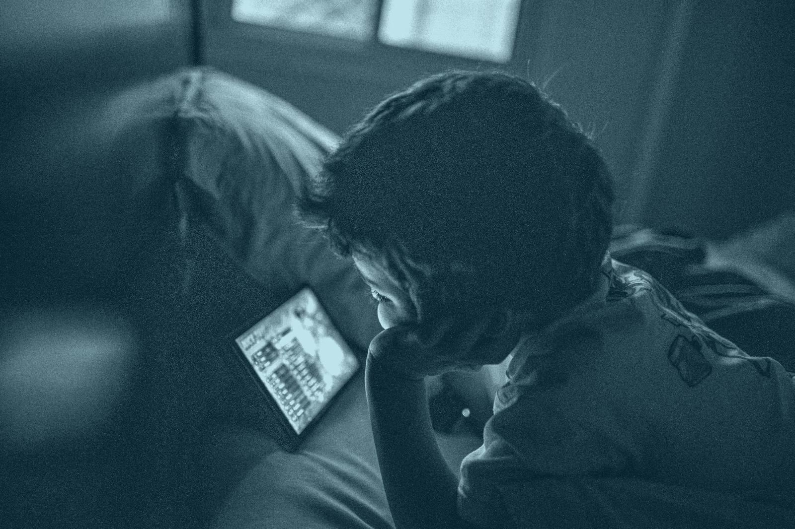

What does “developmentally vulnerable” mean?
Every three years, teachers fill in a checklist for each child in their first year of full-time school. A child is vulnerable in an area when they score in the bottom 10% band set in the first census in 2009, and at risk in the next 15%.
Because those lines are fixed, the shares can rise above or fall below 10% over time.

The five areas teachers assess
Physical health
Energy, fine and gross motor skills, coming to school ready for the day.
Social competence
Getting along with others, following rules, taking responsibility.
Emotional maturity
Helping others, managing worry and frustration, paying attention.
Language and thinking
Early reading, writing and number skills learned at school.
Communication
Telling a story, understanding others, general knowledge.
How many children fall into each band
Switch between 2009 and 2024 to compare the first and latest census.
Where children start behind
Nationally, 23.5% of children were vulnerable on at least one area in 2024. But the council a child lives in shapes the odds far more than that average suggests.
The rate in every council
Use the menu below the city panels to switch between the five areas. The panels zoom into the five largest cities, where most children live. Grey means the result was suppressed.
3.1% in Weipa. Over 90% in the Tiwi Islands.
The lowest and highest council rates in 2024.
Two other ways to look at it
Rates hide how many children are affected, and a single year hides direction. The left map counts children; the right map shows change since 2021.
How many children
Counting children rather than rates flips the picture: the largest numbers live in fast-growing outer suburbs such as Brisbane, Moreton Bay and Logan.
Which way it moved
83 of 125 hexagons got worse between 2021 and 2024, and they are home to 9 in 10 (89.7%) of the children assessed.
How to read this: each hexagon is about 100 km across and pools every council inside it, so large empty councils no longer dominate the map.
The spread inside each state
Each dot is one council. The Australian Capital Territory is reported as a single council, so it is not shown.
A decade of progress, reversed
The share of children on track on all five areas rose steadily to a peak in 2018, then fell. Seven of the eight states and territories went backwards in 2024, and three of the five areas reached their worst level since the census began.
State by state
Each cell shows the share on track on all five areas. Its colour shows the change since the previous census.
55.4% on track in 2018. 52.9% in 2024.
Children on track on all five areas, Australia.
Area by area
The share vulnerable in each area since 2009. The dashed line marks where each area started.
The postcode gap
Children in Australia's most disadvantaged fifth of areas are about 20 points less likely to start school on track than those in the least disadvantaged fifth. The gap has widened since 2009, from 17.1 to 19.9 points, and is widest in the Northern Territory at 31.1.
Since 2021 the gap narrowed slightly, but only because children in the least disadvantaged areas fell back (63.7% to 61.1%), while the most disadvantaged also slipped (42.5% to 41.2%). Nobody improved.
The census stops at school entry. To see what happens next, we follow a national survey of children's movement, screens, sleep and diet.
Different children and different years: the two datasets are not linked, so Part B describes children in general, not the same children as Part A.

A day in the life, by age
How to read this: each ring is one average day of 24 hours. Click a colour in the legend to highlight it across every age; double-click a ring to show all colours again.
The older they get, the less they move
Australia's 24-Hour Movement Guidelines set targets for daily activity, strength activity, screen time and sleep. About 13 in 100 children aged 5–8 meet all of them. By 15–17, fewer than 1 in 100 do.
Meeting every guideline
Each figure is one child out of 100.
Which guideline breaks
Sleep holds up reasonably well. Activity and screen time are where the guidelines break: by 15–17, fewer than 1 in 10 meet either.
How to read this: each arrow runs from ages 5–8 to 15–17. The further it points left, the more children stop meeting that guideline.
Moving versus screens
At 5–8, children spend about as long being active as on screens. By 15–17, screens take nearly four times as long, and girls are the least active of all, at 55 minutes a day.
How to read this: activity grows to the left of the centre line and screens to the right. The dashed lines mark the guidelines.
65 minutes moving. 249 minutes on screens.
A typical day for a 15–17 year old.
Screens in the bedroom, and how well they sleep
Fewer than 3 in 100 children aged 5–8 have a phone in their room. By 15–17, more than 8 in 10 do.
Sleep gets worse, not just shorter. Nearly half of 2–5 year olds slept very well; by 15–17, about 1 in 5 did.
And what they eat
Children's diets carry more saturated fat than recommended at every age: 13–14% of daily energy against a target of no more than 10%. Free sugars climb with age, reaching the World Health Organization's 10% limit by the teens.
Place shows where to act. Age shows when.
The share of children vulnerable on two or more areas is the highest on record at 12.5%, and the council a child lives in matters more than the state: rates run from 3.1% to over 90%.
The gap in on-track rates between the most and least disadvantaged fifth of areas widened from 17.1 to 19.9 points between 2009 and 2024, and grew in every state.
By 15–17, fewer than 1 in 100 children meet all the movement guidelines, screens take nearly four times as long as activity, and saturated fat stays over the limit at every age.
Support that reaches families before school, and keeps teenagers active and rested, addresses both halves of the same story.